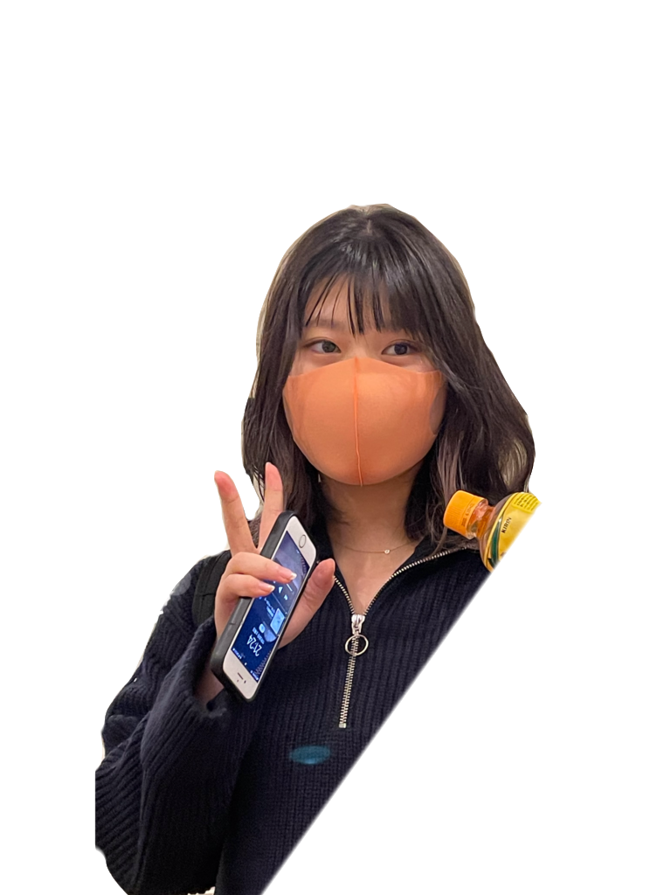
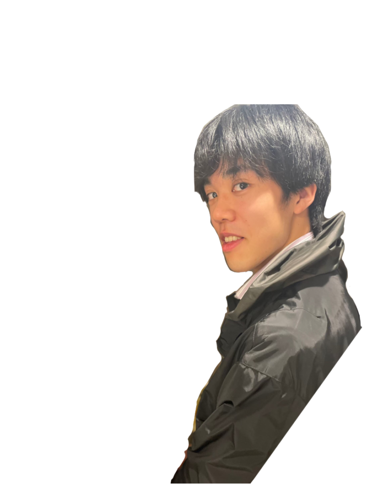
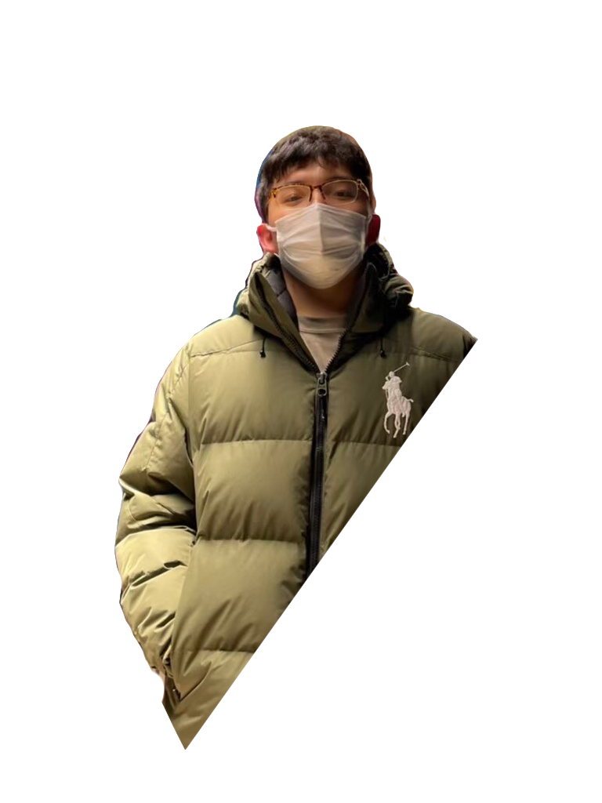
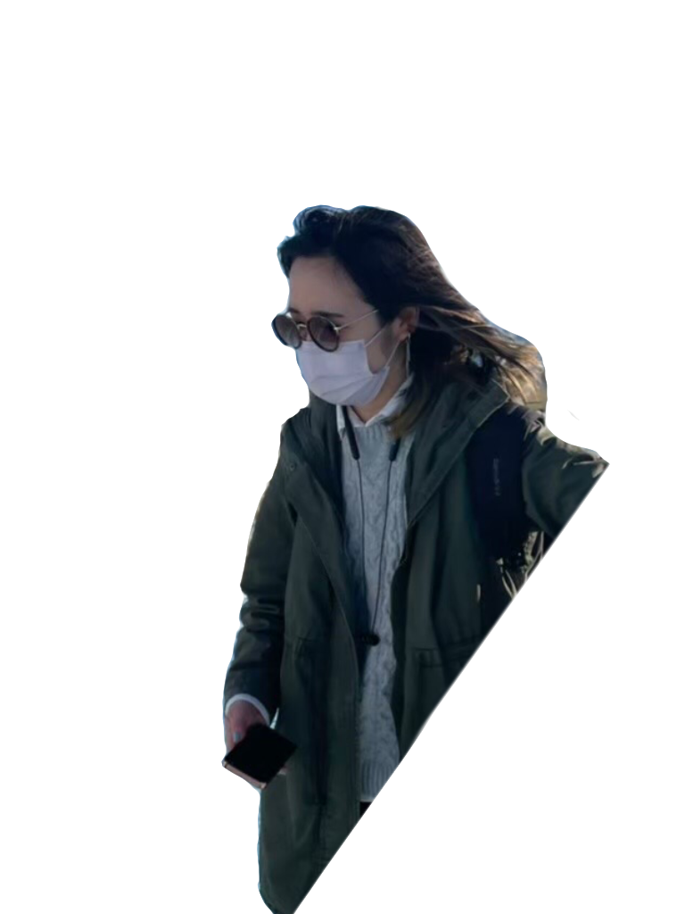

-
MOMO

TOMINAGAQ. なぜPOSSE2を選んだのですか？
A.人が多くて質問できる先輩が少なかったので、広い人脈を持てなくても少人数で深い関係を築き、共に切磋琢磨して行ける場所を作りたいと考えたから。
2.0期生 早稲田大学政治経済学部1年 冨永桃
-
Q.POSSE2のプログラミング面での楽しさを教えてください
A.新しいスキルを習得するときに、教わる立場に立つことがほとんどだが、POSSE2では自分が知識を取り入れると同時に教える立場にも立てるようになるということ。
2.5期生 慶應義塾大学商学部1年 横山健人健人
KENTO

YOKOYAMA -
TSUTOSHI

CHOQ. POSSE2で一番印象に残った出来事は？
A.新人ハッカソンが非常に印象に残った。僕は人生で何かの目標を達成するために数人でどこかに泊まるという経験をあまりしたことがなかったので、こんな素晴らしい機会を与えてくれたPOSSE2と運営を担当したアキラとナオキとかしけんには感謝しかありません！！！
2.5期生 千葉大学園芸学部1年 張致豪
-
Q.POSSE2の立ち上げで大変だったことは？
A.立ち上げの時、サーバントリーダーにみんな立候補してたくさんの衝突があった。でも、それは人生において大切な経験になったし、POSSE2だから実現できたことだと思う。
2.0期生 慶應義塾大学商学部1年 田上黎
REI

TANOUE